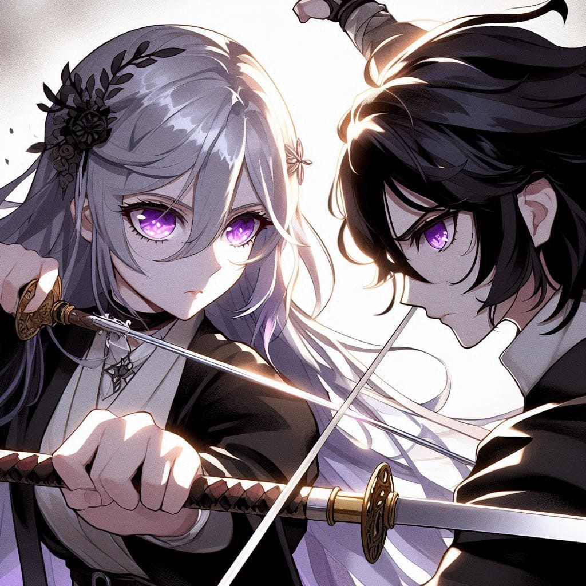
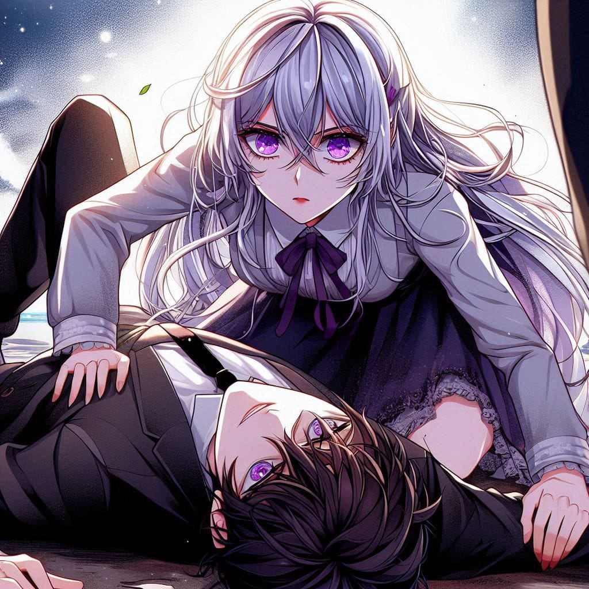

Another refreshing morning had begun for the citizens of Saintara, filled with the promise of new beginnings. But for Saintana, it was just another turn in the endless, unchanging cycle of her life. The same responsibilities, the same faces, the same battles fought within her mind. The monotony weighed on her, and so, for the first time in a while, she decided to alter her routine. She made her way to the Knight Order’s training hall, where the sharp clang of swords and the shouts of commands filled the air with energy.
Among the knights training diligently, her eyes caught sight of Deaus, a young knight who had once been her opponent in a duel. What amused her was the transformation she observed—this was the same man who had shown no remorse in his defeat, and yet now, he trained with the dedication of a scholar eager to learn. His movements were precise, his focus unshakable. She watched him quietly for a moment, finding an odd comfort in the determination he exuded.
Needing a distraction to bury the thoughts gnawing at her, Saintana decided to spar with him. Masking the turmoil in her heart with her usual calm demeanor, she stepped forward and called out to him. "Deaus, a duel."
Deaus turned toward her, and for a moment, there was something different in his eyes. They weren’t filled with arrogance or defiance as they once had been. Instead, they shone with admiration and a burning excitement. It was as if he had been waiting for this moment, desperate for another opportunity to learn from her.
The duel began, and as always, Saintana moved with the precision and grace of a seasoned warrior. Every strike she delivered was calculated, her defense flawless. Deaus, for all his determination, struggled to match her. Yet, there was an undeniable fire in him, an unyielding desire to grow stronger. When the duel ended, Saintana looked at him, her voice steady but carrying a rare note of encouragement. “You have potential,” she said simply.

As she turned to leave, something unexpected happened. Deaus, seemingly caught in a surge of emotion, reached out and grabbed her wrist without thinking. It was an instinctive gesture, but for Saintana, whose reflexes were honed sharper than any blade, it was perceived as an attack. Without hesitation, she twisted his arm and knocked him to the ground.
Realizing what had happened, both of them quickly apologized. Deaus, however, didn’t let the moment slip away. With an intensity that caught everyone off guard, he made his intentions clear. “I want to serve you, Lady Saintana,” he said, his voice unwavering. “Let me be your right hand… your shadow. Let me dedicate my life to you.”
The training ground fell into a heavy silence. The other knights stood still, their whispers carrying through the air. Some called Deaus foolish for his daring request, while others wondered if he had a death wish. Saintana, her face calm and emotionless as always, said nothing for a long moment. Her silver hair swayed slightly in the breeze as she gazed at him, unreadable.
Finally, she spoke, her voice cool but firm. “Don’t you fear a devil like me?” The words lingered in the air, her face betraying no emotion, even in the weight of the moment.
Deaus, however, did not falter. He chuckled softly, his expression calm but resolute. “People only fear those who are above them,” he replied. “What they can’t achieve becomes a curse in their eyes.”

The words struck her like a thunderbolt, reverberating deep within her soul. She froze, her mind racing. Those exact words—she had heard them before. It was the second time she had encountered them in all her past lives. She had heard them before, from someone who had once been close to her.
Without another word, she turned and walked away, leaving the training grounds in silence. Her face, as always, revealed nothing, but inside, a storm was brewing. Deaus’s words had awakened a memory she had tried to bury.
In her mind’s eye, she saw it—golden blonde hair shining under the warm hues of a sunset. A boy stood there, his silhouette etched against the fading light of day. His voice, soft and full of affection, called out to her. “My Milli…”
Saintana stopped in her tracks, her heart pounding. The name, the voice—it all felt so real, so familiar. IT WAS HIM "she muttered"...
As she stood there, the war within her raged on. Who was that boy? Why did his words still echo in her mind after all these lives? And why did hearing them again make her heart ache with a longing she couldn’t explain?